ELO320 - Estructuras de Datos y Algoritmos
Marie González-Inostroza
Algoritmos como InsertSort, MergeSort o QuickSort basan su lógica en el contraste de dos valores ($\leq$ o $ >$).
Existen algoritmos que evitan la cota $\Omega(n \log n)$ porque no dependen de comparaciones.
Basado en el recuento de frecuencias.
Basado en el ordenamiento por dígitos.
Advertencia: Ambos tienen restricciones y su complejidad real es más fina que un simple $\mathcal{O}(n)$.
Algoritmo de Ordenamiento basado en contar la cantidad de ocurrencias de cada elemento en el arreglo de entrada.
Arreglo de Entrada A
Paso 1: Conteo de Frecuencias ($C[i]$)
Paso 2: Suma Acumulada ($C[i]$ ahora indica el índice final)
$C[i] = C[i] + C[i-1]$. Esto da el índice donde termina cada valor.
Paso 3: Construcción de B (Estable)
Se recorre $A$ de derecha a izquierda. Se usa $C[A[i]]$ como índice en $B$ y luego se decrementa $C[A[i]]$.
void counting_sort(int A[], int largo, int max){
int i, ind_sgte, veces;
int B[largo]; // Arreglo de salida
int C[max + 1]; // Arreglo contador (de 0 a max)
// 1. Inicializar arreglo C
for(i = 0; i <= max; i++)
C[i] = 0;
// 2. Contar ocurrencias
for(i = 0; i < largo; i++)
C[A[i]]++;
// 3. Calcular índices de inicio acumulados (para estabilidad)
ind_sgte = 0;
for(i = 0; i <= max; i++){
veces = C[i];
C[i] = ind_sgte; // C[i] ahora guarda la posición de inicio
ind_sgte += veces;
}
// 4. Mover elementos a B, manteniendo el orden relativo
for(i = 0; i < largo; i++){
// B[posición_de_A[i]] = A[i]
B[C[A[i]]] = A[i];
C[A[i]]++; // Mover al siguiente índice disponible para ese valor
}
// 5. Copiar B de vuelta a A (o retornar B)
for(i = 0; i < largo; i++){
A[i] = B[i];
}
}
Utilizando Counting Sort, ordene el siguiente arreglo de las notas obtenidas por los alumnos de un curso:
70, 85, 90, 75, 60, 95, 80, 70, 85, 100, 65, 90, 80, 75, 85
Algoritmo de Ordenamiento basado en dígitos. Ordena los elementos aplicando un algoritmo de ordenamiento estable (como Counting Sort) sucesivamente a cada dígito (o *radix*), desde la unidad menor a la mayor.
PASADA 1: UNIDADES (Dígito menos significativo)
Resultado de Counting Sort (Ordenado por unidades):
PASADA 2: DECENAS (Dígito más significativo)
Resultado Final (Ordenado por decenas de forma estable):
int maximo(int *A, int tam) {
// Función auxiliar para encontrar el elemento más grande y determinar 'd'
int mayor = A[0];
for (int i = 1; i < tam; i++)
if (A[i] > mayor)
mayor = A[i];
return mayor;
}
void RadixSort(int *A, int tam) {
int max = maximo(A, tam);
// Iterar por cada 'lugar' (unidad, decena, centena, etc.)
// 'lugar' comienza en 1 (unidades)
for (int lugar = 1; max / lugar > 0; lugar *= 10)
// Se asume que CountingSort se adapta para ordenar por el dígito 'lugar'
CountingSort(A, tam, lugar);
}
El Counting Sort debe modificarse para trabajar con un dígito específico (determinado por `lugar`), no con el valor total.
void CountingSort(int *A, int tam, int lugar){ // 'lugar' = 1, 10, 100...
int B[tam];
int C[10] = {0}; // El contador siempre es de tamaño 10 (dígitos 0-9)
// 1. Contar ocurrencias del dígito actual
for (int i = 0; i < tam; i++)
C[(A[i] / lugar) % 10]++; // Extraer el dígito en 'lugar'
// 2. Calcular índices de inicio acumulados
for(int i = 1; i < 10; i++)
C[i] += C[i-1];
// 3. Mover elementos a B desde atrás (para mantener la estabilidad)
for(int i = tam - 1; i >= 0; i--){
int digito = (A[i] / lugar) % 10;
// C[digito] ahora apunta al final del segmento de ese dígito
B[C[digito] - 1] = A[i];
C[digito]--;
}
// 4. Copiar B de vuelta a A
for(int i = 0; i < tam; i++)
A[i] = B[i];
}
Utilizando Radix Sort, ordene lexicográficamente la siguiente lista de palabras en inglés:
cow, dog, sea, rug, row, mob, box, tab, bar, ear, tar, dig, big, tea, now, fox.
Clave: Considere el abecedario (26 letras) como la base $k$ del Counting Sort adaptado.
Estructura de datos basada en un árbol binario completo que satisface la propiedad de heap: En un Max Heap, para cada nodo $i$, el valor de $i$ es mayor o igual que el de sus hijos.
Un heap es un árbol binario casi completo donde cada nodo es mayor (Heap Máximo) o menor (Heap Mínimo) que sus hijos.
✅ CUMPLE (Heap Máximo)
❌ NO CUMPLE (Falla en el Montículo)
Algoritmo de ordenamiento basado en la estructura de datos Heap (Montículo). Utiliza un Max Heap para ordenar los elementos extrayendo repetidamente el máximo y reconstruyendo el heap.
void heapify(int arr[], int i, int tam){ // arreglo, índice, tamaño
int mayor = i; // al inicio el nodo es el mayor
int l = hijo_izq(i);
int r = hijo_der(i);
// 1. Comparar con el hijo izquierdo
if (l < tam && arr[l] > arr[mayor])
mayor = l;
// 2. Comparar con el hijo derecho
if (r < tam && arr[r] > arr[mayor])
mayor = r;
// 3. Intercambio y recursión
if (mayor != i){ // si el mayor no es el padre original
// Realizar el intercambio
int temp = arr[i];
arr[i] = arr[mayor];
arr[mayor] = temp;
// Llamada recursiva en el sub-árbol afectado
heapify(arr, mayor, tam);
}
}
Proceso de construcción del Max Heap a partir de un arreglo desordenado, aplicando `heapify` desde el último nodo interno hacia la raíz.
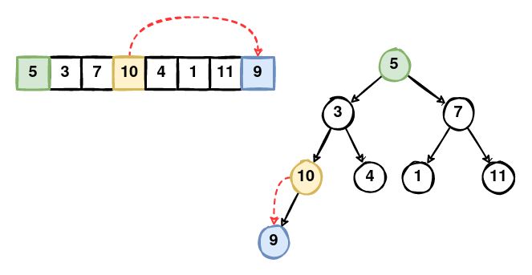
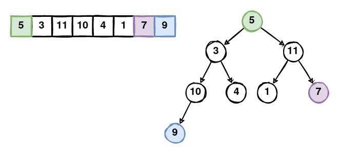
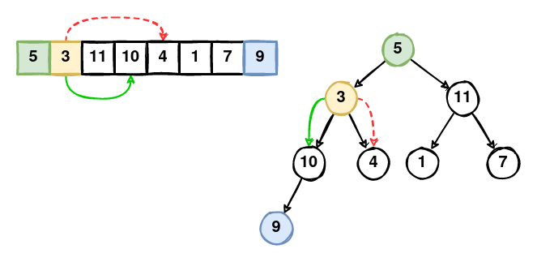
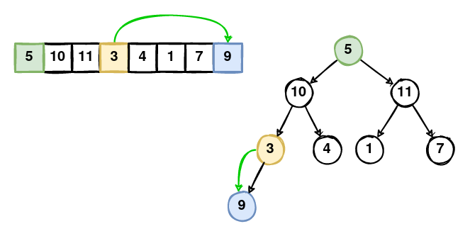
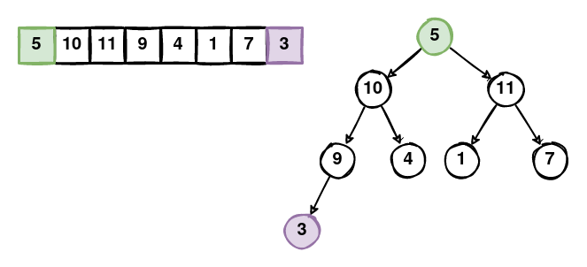
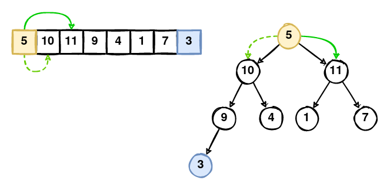
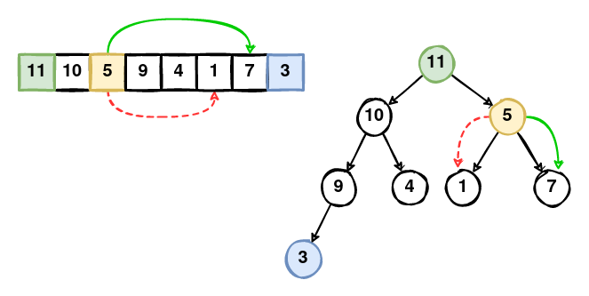
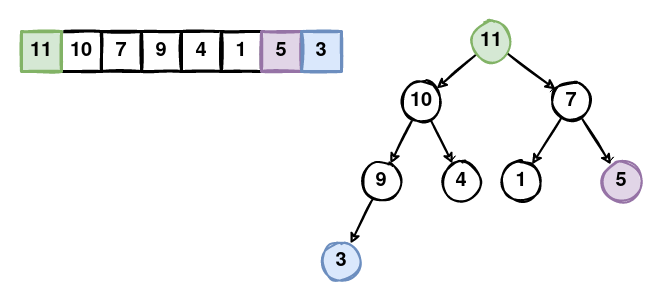
void build_heap(int arr[], int tam){ // arreglo y tamaño
// Empezamos desde el último nodo interno (tam/2) hasta la raíz (1 o 0)
for (int i = tam / 2; i >= 0; i--){
heapify(arr, i, tam);
}
}
Eficiencia: La construcción del heap es sorprendentemente eficiente, con una complejidad de $\mathbf{\mathcal{O}(n)}$.
Proceso de extracción de la raíz y re-heapificación, paso a paso.
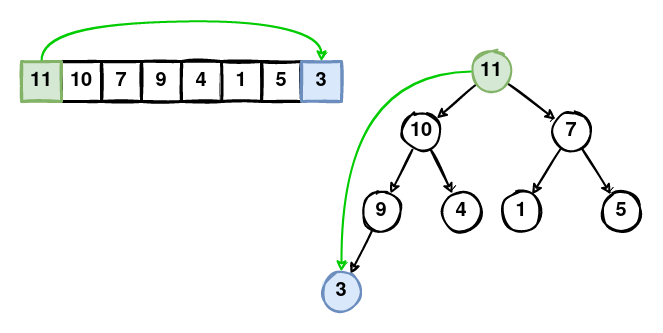
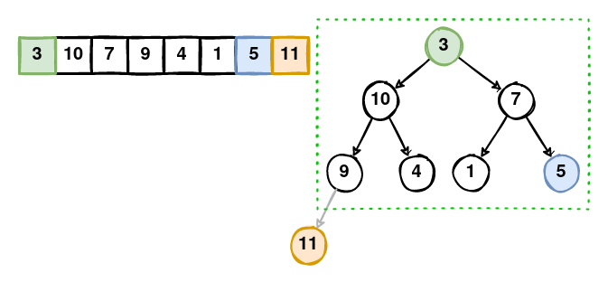
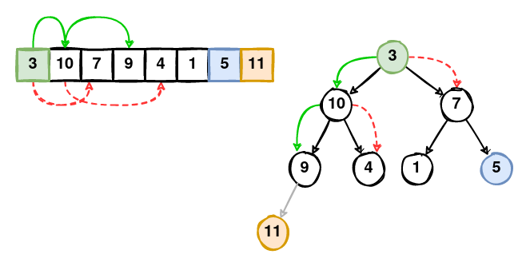
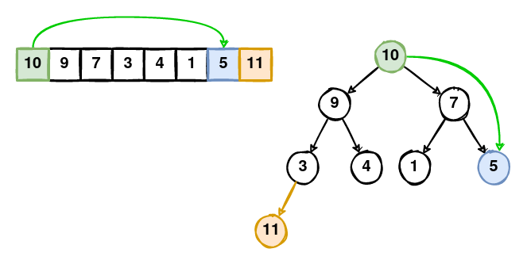
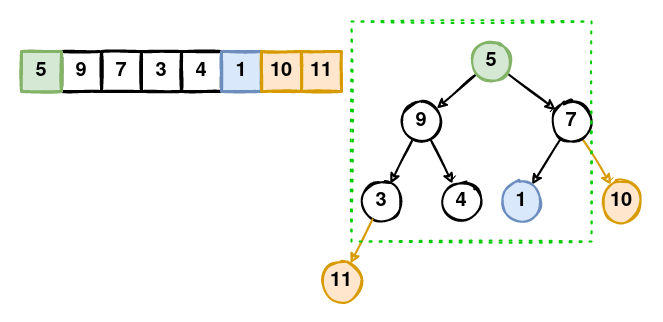
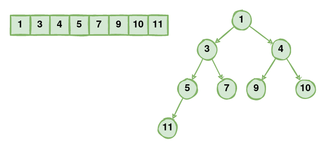
void HeapSort(int arr[], int tam){ // arreglo y tamaño
int temp;
// Fase 1: Construir el Max Heap
build_heap(arr, tam);
// Fase 2: Extraer elementos uno por uno
for (int i = tam - 1; i > 0; i--){ // 'i' actúa como el nuevo tamaño del heap
// 1. Intercambiar la raíz (max) con el último elemento del heap
temp = arr[0];
arr[0] = arr[i];
arr[i] = temp;
// 2. Arreglar el heap (el elemento más grande fue movido)
heapify(arr, 0, i);
}
}
Complejidad: HeapSort es $\mathbf{\mathcal{O}(n \log n)}$ en el mejor, peor y caso promedio, ya que $\log n$ es el costo de cada llamada a `heapify`.
La estructura de Heap Binario (Binary Heap) es la base de las Colas de Prioridad, donde los datos se asocian con un valor entero que representa su prioridad.